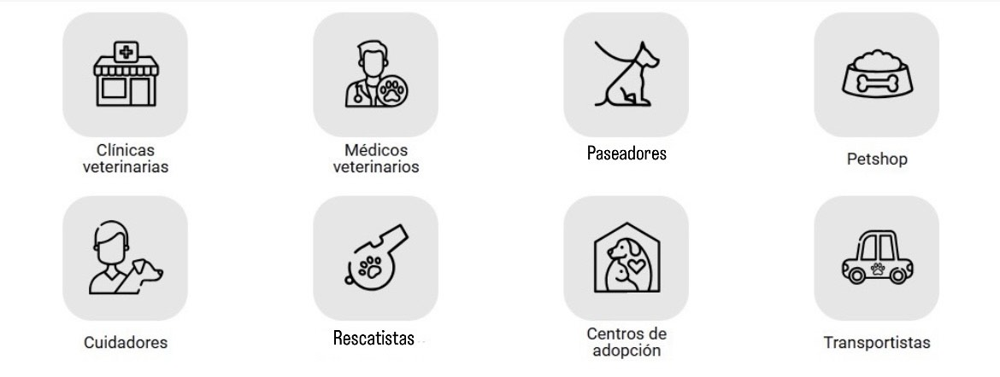

Inicio > Nuestros Servicios
Nuestros Servicios
- Servicios médicos generales para el cuidado de la salud de las mascotas. Baño y corte.
- Atención y consultas profesionales por parte de veterinarios.
- Servicios de paseo para las mascotas, asegurando ejercicio y recreación.
- Venta de productos como alimentos, juguetes, y accesorios para mascotas.
- Participación y colaboración en el rescate y cuidado de animales abandonados o en situación de riesgo.
- Facilitar la adopción de mascotas, promoviendo la reubicación de animales que buscan un hogar.
- Servicio de transporte especializado para llevar a las mascotas al veterinario o a otros lugares necesarios.